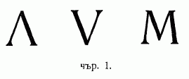

Беседа 1445 от 3877 · Беинса Дуно
Природна философия / Природни гами в живота (продължение и разбор)
Т. м.
Съвременните хора живеят и работят с оглед на своята философия и на своите разбирания. Освен човешката философия, съществува и природна философия. Към тази философия, именно, трябва да се стреми човек. Домогне ли се до природната философия, веднъж завинаги той трябва да ликвидира със своята стара философия – с философията, която е събрал от памтивека. Трябва ли момъкът, който е станал 21 годишен, да се придържа към своите обуща, дрехи, които е носил от първата си годишна възраст досега? На времето тези обуща и дрехи са имали смисъл и предназначение, но днес те са стари, окъсани, безполезни. Те трябва да се изгорят. При това, те не са били по вкуса на младия момък. Когато е бил дете, даже и юноша, родителите му го обличали. Те му правели дрехи по свой вкус. Днес, когато е станал пълнолетен, момъкът сам избира дрехите и обущата си по свой вкус и желание.
Следователно, ако иска да се развива, човек трябва да се освободи от своите стари разбирания, от философията на неговите деди и прадеди. Смисълът на живота е в новото. Не е важно, как се е хранил човек досега; важно е, как днес ще се храни. Какви са били плодовете на крушата в миналото, не е важно; важно е, какви са в настоящето. Каква е била философията на хората досега, не е важно; важна е сегашната философия, която се налага на хората. Това е природната философия, която дава обяснение на всички явления в живота. Тя носи новата култура в света. Геометрически ние изразяваме думата „култура“ с права линия. Правата линия пък подразбира почва. Следователно, за да имаш култура, трябва да имаш почва, в която да сееш. Когато се говори за култура, трябва да се знае от какво е тази култура. Има култура от растения и плодове, култура от различни птици, от добитък, от свине и т. н. Има култура от различни видове хора. Има култура, която разработва човешките мисли, чувства и действия.
Значи, мислите, чувствата и постъпките на човека се посаждат и обработват, както семената и дърветата. Както за израстването на някое растение се изисква определен срок, така и за реализирането на дадена мисъл е нужно определено време. Колкото по-дълготрайно е едно дърво, или растение, толкова повече време е нужно за развитието му. Колкото по-благородни и възвишени са мислите, чувствата и постъпките, толкова повече време е нужно за реализирането им. Ако не познавате този закон, вие ще се натъкнете на големи противоречия. Например, някой иска да стане поет, музикант или художник и ако в скоро време не постигне желанието си, той се обезсърчава. Това не е лесна работа. Да станеш музикант, философ, това значи, да събереш всичкото знание по музика или по философия на хилядите поколения преди тебе и да направиш от него един извод.
Какво разбирате под думата „философия“? Философията е синтез на всички явления в живота, на причините и последствията, които ги обуславят. Затова се говори за философия на историята, философия на науките, философия на живота и т. н. При това, не е достатъчно само да знаете причините и последствията на нещата, но да знаете какви методи да употребите, за да изправите известно отклоняване. И в изкуствата има философия. Според тази философия, човек сам трябва да оцени това, което е изработил, да не очаква другите да го ценят. Той пръв трябва да има думата за своята работа. Ако не може да оцени себе си, своите работи, човек не би могъл да оцени другите хора. Да се оценява човек правилно, това значи, нито да се подценява, нито да се надценява. Ако се надценява, като излезе на пазара, няма да му дадат тази цена, която той сам си е определил. Понякога човек сам се подценява. Хората около него го оценяват по-високо, отколкото той сам. Често селяните постъпват така. Те подценяват или надценяват стоката си, с което губят. Ако някой гражданин от селото им пожелае да купи масло или яйца, те му искат голяма сума. Защо? Те мислят, че ако отидат в града, ще получат много пари. Наистина, те отиват в града, скъсат едни цървули и в края на краищата, продават стоката си на половина цена от тази, която в селото им дават. В селото надценяваха стоката си, а в града я подценяват. Те не знаят истинската цена на стоката си. Това се дължи отчасти на упоритостта на човешкия характер. Ще кажете, че човек трябва да устоява на своите идеи. Има смисъл човек да бъде твърд в идеите си, но когато се отнася за нещо съществено. Ако той устоява за несъществени идеи, нищо няма да спечели.
Следователно, когато поддържа известна идея, човек трябва предварително да я анализирал, да знае какви външни и вътрешни качества съдържа тя. Например, някой има идеята да бъде красив. Красотата има външни и вътрешни качества. Външната красота се изразява с правилни линии. Лицето на красивия човек трябва да е правилно, между всички линии да има хармонично съчетание. Вътрешните качества на красивия човек с разумност, доброта и характер. Ако едно от тия качества липсва, човек не е напълно красив. Външна красота без вътрешни качества не е истинска. Тя скоро се губи. Красивият човек трябва да бъде устойчив, да издържа на всички изпитания.

От това гледище, човек може да реализира своите идеали дотолкова, доколкото е изразител на мислите, на енергиите на живата, разумна природа. Понякога човек е свързан с всички хора. Тогава той трябва да бъде проводник на общите човешки мисли и копнежи. Това е истинският път за човешкото развитие. Отклони ли се от този път, той става причина за своите нещастия. Колкото повече се отклонява човек от правия път на живота, толкова по-големи мъчнотии си създава. Какво печели детето, което се гневи на майка си и на баща си? Какво ще придобие детето, ако не слуша родителите си? Родителите му имат добро желание, да го направят учен, пращат го на училище, но то не желае, казва, че може само да учи. Колкото и да е способно и даровито, детето непременно трябва да мине през школа. То само не може да постигне това, което родителите и учителите му могат да направят за него. Детето мисли само за игри и не иска да учи, но ще дойде ден, когато ще се види изоставено от всички. Тогава ще се принуди да стане прост овчар. Затова от всеки човек се изисква послушание.
И тъй, като говорим за култура, ние разбираме дадени условия, при които човек може да постигне своите желания. Културата не подразбира условия за удоволствия на човека. Истинската култура носи блага и условия, необходими за развитието на човека. Той трябва да използва тия блага и условия разумно, за да реализира своите идеали и копнежи. Човек учи, работи, да придобие знания, с които да бъде полезен, както на себе си, така и на своите ближни. Някой учи, придобива знания, заема някаква служба и се задоволява с това. Той очаква един ден да го пенсионират, да заживее в установения ред на живота. Друг пък има знания, работи, но не може да получи пенсия. Той разчита на себе си. Той се намира извън установения ред на нещата.
Според начина, по който хората живеят, ние ги делим на две категории: едни, които живеят по установения ред на живота, и други, които живеят извън този ред. Да живее човек по установения ред на нещата, това значи да го пенсионират. Страшно е да живее човек с мисълта да бъде пенсиониран. Това значи, да се откаже от работа. Докато е жив, човек трябва да работи. Когато говедото се угои добре, пенсионират го. Господарят му го завежда на кланицата да го заколят. Когато дървото закрепне и започне да дава добри плодове, господарят му го огражда и започва да го използва. Той се радва на плодовете му. Всяка година той го очаква да роди, да обере плодовете. Какво е положението на пенсионирания човек? Щом пенсионират човека, той престава да работи, понеже се е осигурил. Дойде ли до това положение, от невидимия свят веднага му изпращат призовка, викат го там, да видят, какви плодове е изработил.
Сега, това не трябва да ви обезсърчава. Всеки човек трябва да се запита, кой е правият начин на живеене. Всеки трябва да се запита, какво може да постигне в живота си. Ако някой е дошъл на земята като ябълка, трябва да знае, че от него се иска да даде доброкачествени плодове. Ако е дошъл като кон, задачата му е да бъде здрав, силен, да върши работа на господаря си. Ако е дошъл на земята с желанието да стане търговец, той ще върти търговия, ще прави заеми, ще става поръчител на този, на онзи, докато един ден му наложат да плаща за поръчителството си. Цял живот ще плаща, докато най-после замине за онзи свят. Близките му ще го оплакват и ще кажат: Бог да го прости! Плаща за другите, но поне направи някакво добро. Какво добро е направил, и дали е направил добро, това е въпрос. Кое дава повод на човека да мисли, че е направил нещо добро, или че е постигнал нещо? Къде е свидетелството му за това? За всяко направено добро се дава документ на човека. Някои могат да ви дадат една бележка, но, вместо да ви платят, в нея пише нещо лошо за вас, заради което ще ви бият. Това често се случва в живота. Човек очаква благодарност, а получава бой, или друго нещо, което не е очаквал.
Един селянин, от шопските села, отишъл в града да продаде маслото си. Той мислел, че там ще го продаде по-скъпо и ще спечели повече, затова отказвал да даде маслото си на хора от селото. Като дошъл в града, двама апаши решили да купят маслото му. Хубаво било маслото на селянина, а при това, цяло гърне. Апашите пазарили маслото, съгласили се на цената, която селянинът искал, и му казали: Ние купуваме това масло за един свещеник в с. Княжево. Вземи тази бележка, занеси я на свещеника, той ще ти даде сумата. Селянинът повярвал на купувачите, взел бележката и тръгнал за Княжево, при свещеника. В бележката било писано: Отче, вземи тези 30 лева и прочети една молитва на селянина. Той е болен, малко побъркан, затова, каквото говори, няма да му обръщаш внимание. Селянинът стигнал в Княжево, намерил къщата на свещеника, предал му бележката и очаквал да получи пари за маслото си. Като прочел бележката, свещеникът турил епитрахила си и повел селянина към църквата. Свещеникът влязъл в църквата, и селянинът – след него. Докато селянинът си мислел, че свещеникът ще му даде парите, изведнъж се намерил под епитрахила на свещеника, който започнал да му чете молитва. – Слушай, дядо попе, тази работа с молитва не става. Пари искам аз. Свещеникът, обаче, си мислел: Горкият селянин, не е с всичкия си ум. Дано се излекува – и продължавал да му чете молитви. – Слушай, дядо попе, колкото и да четеш молитви, тази работа така няма да стане. Ти трябва да платиш за маслото.
Съвременните хора се намират в положението на шопа, на когото четат молитви, но той вижда, че с молитви работата не се нарежда. Наистина, работите на човека не могат да се наредят с разбирането, което той има за живота. Съвременните хора, млади и стари, се нуждаят от нови разбирания. Какво мисли да постигне младият? Ако младият има стари разбирания за живота, нищо не може да постигне. Ако пък старият има нови разбирания, той може да постигне много неща. Днес и младият, и старият се съмняват в съществуването на Бога, на онзи свят. Чудни са хората! Те трябва да знаят, че по-реална идея от съществуването на Бога, както и на онзи свят, няма. – Къде е онзи свят? – Онзи и този свят са на едно място. Дето е този свят, там е и онзи. Ще питате, защо не го виждате. Виждате ли чувствата, които пълнят сърцето ви? Мислите виждате ли? Нито чувствата виждате, нито мислите, въпреки това и едните, и другите съществуват. Вие говорите за постъпките на хората, но виждате ли ги? Каква форма имат добрите и лоши постъпки? Те нямат форма, невидими са, въпреки това се говори за тях, за последствията им. Говорите за любовта, без да я виждате. Значи, човек живее повече в невидимото, в онзи свят, отколкото във видимия свят, и пак се съмнява в съществуването му.
Чувствата и мислите на хората, за които се говори, представят предмет на духовния и на умствения свят. Хората говорят за тези светове, без да ги виждат. Те говорят и за онзи свят, но понеже не го виждат, не вярват в съществуването му. Те не подозират, че светът, в който живеят, е духовният свят, т. е. онзи свят. В този смисъл онзи свят е реален, а този свят, т. е. физическият, е външна форма, опаковка на духовния. Хората мислят, че между този и онзи свят има граница, през която не може да се минава. И така да е, ще дойде ден, когато тази граница ще се вдигне и ще видите, че този и онзи свят са едно и също нещо. Разликата между двата света седи само в това, че съществата в онзи свят са по-културни. Следователно, не е лесно едно същество от този свят да отиде в онзи свят. Защо? Разбиранията и възгледите му за живота са ограничени. Той ще се намери в същото положение, в каквото ще изпадне волът в човешкия университет: Възгледите на сегашните хора са валидни само за този свят. Влязат ли в онзи свят със своите разбирания, те няма да им трябват. Знанието, което сега имат, там не може да им помогне.
Един английски лорд и дъщеря му предприели едно дълго пътешествие по море. Един от слугите им ги придружавал. Случило се, че параходът бил разбит от силни буря, и те, заедно със слугата си, едва успели да се спасят с една лодка, която ги отнесла на един уединен остров. Тук те прекарали цели десет години. Лордът и дъщеря му били учени, знаели езици, но тук знанието им не могло да се приложи. Благодарение на слугата, който знаел да оре, сее и жъне, те не умрели от глад на острова. Той станал техен господар и учител, а те – негови слуги. Те работили с него заедно, изпълнявали всичко, каквото им заповядвал. Съдбата се смилила над тях. Един параход минал край острова и ги взел със себе си. Като се намерили отново в отечеството си, те сменили ролите си: лордът и дъщеря му заели положението си на господари, а слугата заел старото си положение.
Какво показва този пример? Човек трябва да има нещо реално в себе си, на което да разчита във всички случаи на живота си. Той трябва да има убеждение, върху което да гради своя живот. Задавали ли сте си въпроса, какво всъщност представяте като човек? Къде ще бъдете след смъртта си? Ако днес сте музикант, поет, философ или художник, запитвали ли сте се, какъв ще бъдете на онзи свят? Ако на земята сте музикант, и в онзи свят трябва да бъдете музикант. Ако тук сте учен, философ или поет, и на онзи свят трябва да бъдете същият. Това се отнася за онзи, който е истински музикант, учен, поет и философ. Това значи, музиката, поезията или философията да са проникнали в душата му. Тогава, при каквито положения и да се намира, човек ще носи със себе си реалното, на което разчита във всички моменти на живота си. Знанието, музиката, поезията на съвременните хора е външната им дреха, с която временно са облечени. Щом напуснат този свят, те събличат тази дреха и от нея остава само спомен, че никога са били облечени в дрехата на поета, музиканта, учения и др. Всъщност, истинско знание, истинска музика или поезия са тези, с които, облече ли се човек веднъж, не може вече да ги съблече.
Едно трябва да знаете: всеки ден човек трябва да прибавя към знанията си, към своите мисли и чувства по нещо ново, да бъде готов за любовта, която иде вече в света. Не работи ли върху себе си, той ще остане неразбран за новите времена и условия. Как ще бъде приет един гайдарджия в една възвишена музикална среда? Преди да познават неговата музика, интересуващите ще го посетят, но като го чуят, един след друг ще напуснат залата и ще го оставят сам, със своята гайда. Който го слуша, нищо няма да разбере и ще каже, че неговата музика е останала от стари времена, когато са свирили и пели само религиозни песни. Много от народните песни имат религиозни мотиви. Думите обаче не са религиозни.
Често слушате народната песен: „Майка Стояну думаше“. Какво питал Стоян майка си, и какво му отговорила тя? Стоян пита майка си, кога ще се ожени, а тя му отговаря, че ще дойде ден и той да се ожени – утешава го. Докато не е женен, Стоян се облича добре, ходи спретнат и напет. Като се ожени, напуща се, нищо не иска да знае, от нищо не се интересува и казва, че не струва човек да се жени. Докато не е женен, човек търси любовта. Като се ожени, започва да я отрича.
И съвременните хора ту отричат, ту признават Бога. Някой казва: Какво губя или печеля, ако вярвам в Бога? Ако вярвам в съществуването Му, а Той не съществува, нищо не губя. Ако пък вярвам, че съществува, все ще спечеля нещо. Философията на живота не седи в това, дали вярва човек в съществуването на Бога. Съществува, или не съществува Бог, това е математическа задача, която трябва да се реши правилно. От правилното или неправилно решаване на тази задача зависи успеха или неуспеха на самия човек.
Какво ще стане със семето, което е лишено от слънце? Щом няма слънце, семето не може да израсте. Ако пък израсте, не може да се развива. Значи, за живота на земята слънцето е от първа необходимост. Оттук вадим заключение: за живота, за растенето и развиването на човешката душа, Бог е от първа необходимост. – Ама дали съществува Бог? – Щом ти съществуваш, и Бог съществува. Твоето съществуване е първото доказателство за съществуването на Бога. Ако човек сам не вярва в това, никакви доказателства, никаква философия не е в състояние да го убеди. Остане ли човек да се влияе от хората, едни ще го убеждават, други ще го разубеждават. Истинско убеждение е това, което никой не е в състояние да разклати. Истинско убеждение е това, което от никакви мъчнотии, от никакви препятствия и противоречия не може да се разколебае. Това подразбира истинско познаване на живота. Човек може да разчита само на такива убеждения, които самият живот е опитал и проверил. Убеждение, което животът не е опитал, всякога може да се заличи. Само онзи има убеждение, който е поставил за основа на живота си любовта към Бога. Това трябва да бъде основната идея на неговия живот.
Кои са характерните белези на една идея? Характерните белези на каква и да е идея са нейната глава и крака, т. е. началото и краят й. Значи, за всяка идея са важни два момента: явяването или изникването й и краят или завършването й. Например, яви ли се в човека идеята за съществуването на Бога, първо той трябва да се стреми към придобиване на някаква опитност в това направление. Макар да е направил микроскопически опит, човек трябва сам да е дошъл до убеждението, че Бог съществува. Направи ли един малък опит, от който да е придобил известно знание, човек може да каже, че се убедил в съществуването на Бога и живее вече на здрава основа. Идеята за Бога прави човека щастлив. Към щастието, именно, се стремят всички хора.
Представете си, че попаднете в Англия, но не знаете нито една английска дума. Искате да намерите някаква работа, но не можете, никъде не ви приемат. Минават три-четири дена, и вие все гладувате, нямате пари да си купите хляб, нямате и познати. Както вървите, срещате един човек, който спира вниманието си върху вас и започва да ви разпитва отде сте, какъв сте, защо сте дошли в Англия, какво мислите да правите и т. н. Вие не разбирате езика му и на всички зададени въпроси отговаряте: Аз съм българин. Най-после този човек ви завежда при един българин, който знае английски, и от него разбира положението, в което се намирате. Като вижда, че сте в безизходно положение, той ви поканва у дома си, нахранва ви добре и ви дава една сума да се върнете в България. Кой отвори сърцето на този англичанин и го застави да ви помогне? Не е ли Този, Когото вие отричате? Ето една опитност, която показва, че Бог съществува и се грижи за всички същества. Колкото по-силна е вярата на човека, толкова по-големи опитности има за съществуването на Бога. Само съмнението е в състояние да лиши човека от тези опитности. Има случаи, когато Бог тъкмо се готви да задоволи желанието на човека, но в един момент на съмнение, на разколебаване в съзнанието си, той разваля всичко. Достатъчно е човек за момент само да се разколебае във Великия принцип на живота, за да изгуби всичко.
Както в един момент детето може да изпусне от ръката си топката, с която играе, така всеки човек в един момент може да се разколебае в науката, в религията, в живота, в любовта и т. н. Може ли човек да устои на противоречията, на спънките и мъчнотиите в живота си, без да се усъмни и разколебае, той е хванал в ръката си ключа на живота. От това зависи неговото повдигане. От това зависи неговото щастие. Не е позволено на ученика да се съмнява.
Като човеци, от вас се иска, не да бъдете хора на науката, но да имате убеждение, на което да разчитате във всички случаи на живота си. Всеки трябва да се познава, да знае, истински човек ли е, или не. Ако някой ви запитва, вярвате ли в Бога, какво знаете за онзи свят, поканете го у дома си, дайте му един хубав обяд, кажете му няколко благи думи. Като го приемете добре, вие можете да му кажете, че това, което направихте за него, е доказателство за съществуването на онзи свят. Доброто ядене, в мисли и чувства, благите думи, добрите отношения са, прояви на същества от духовния свят. При това положение можете ли да се съмнявате в съществуването на духовния свят? Не само човек може да приема добре своите ближни, но и животните проявяват благородни постъпки. Кравата може да се приближи до човека, да му ближе ръката и след това доброволно да му даде възможности да опита млякото й. Вие можете да видите добри прояви от най-голямото до най-малкото същество. – Защо? – Защото Бог живее във всички живи същества и се проявява, някъде по-малко, някъде повече – според степента на тяхното развитие.
Като млади, какво очаквате в живота си? Ще кажете, че очаквате да ви посети любовта. Как ще ви посети любовта? Любовта посещава младия чрез мъжа или чрез жената. Младият иска да намери човек да го обича. Момата очаква да дойде някой княз, да я обича. Момъкът търси някоя княгиня. Какво означават князът и княгинята? Те означават някаква възвишена, велика идея, към която младият се стреми. Как ще посрещнете своя възлюбен или своята възлюбена? Другояче казано: как ще посрещнете своята идея? Всеки човек има някакъв идеал, към който се стреми. Като го запитат, какъв е неговият идеал и как ще го посрещне, той започва да се стеснява. Не е лошо да се срамува човек, но срамът е на място, когато човек върши престъпления. Изобщо, срамът е благородна проява. Той е спирачка в човешкия живот. Човек се срамува да не направи нещо, което не трябва, да не каже нещо, което не е на място. Изобщо, срамът предпазва човека от извършване на известно престъпление или от правене на погрешки. Между срама и страха има известна връзка.
Когато говорим за любовта, хората я разбират едностранчиво. Те имат предвид главно любовта между мъже и жени. Това е ограничено разбиране. Какво ще кажете за любовта на майката към дъщерята, или на бащата към сина и обратно? Бащата е поддържал сина си и дъщеря си цели десет години в странство и очаква деня на връщането в дома им. Как мислите, добре ли ще ги посрещне бащата? Той ще им устрои богато угощение, на което всички негови приятели и познати ще вземат участие. Всички, които посрещат сина и дъщерята, са все техни възлюбени князе и княгини. Какво показва това? Че любовта има много форми на изявление, а не само една.
Следователно, дойдете ли до любовта, ще знаете, че всички любещи души са свързани с възвишените и разумни същества от невидимия свят. В този смисъл, когато имате една идея, която обичате и в която вярвате, тя се подкрепя от всички възвишени и любящи души. Всяка душа внася по един приток към вашата идея. Всяка душа ви служи като подтик за реализиране на вашата идея. Колкото малка да е вашата идея, щом дойдат тия същества около вас, те непременно ще я засилят. Тези същества изпълват пространството и са крайно отзивчиви към всеки благороден стремеж на човека. Достатъчно е да се отправи най-слабият зов към тях, за да се притекат веднага на помощ. За тях няма разстояние, няма никаква преграда. Те са невидимите помагачи на човека. Придобиете ли любовта, вие придобивате помощта на хиляди и милиони любящи души. Любовта подразбира колективната работа на множество души, свързани в една идея и в едно разбиране. Велика и мощна сила е любовта. Усъмниш ли се в нея, всички души, които работят в нейно име, започват постепенно да те изоставят, докато останеш съвършено сам. Страшно е човек да се усъмни и разколебае във великата любов, във великата мъдрост и във великата истина.
Съвременните хора вярват в проявите на малката любов, а не вярват в проявите на голямата любов. Те вярват в медта, в калая, в оловото, а не вярват в среброто, златото и платината. Те не познават отношенията, които съществуват между атомите на благородните метали. Отношенията, които съществуват между атомите на златото, например, са подобни на отношенията между разумните същества, вследствие на което носят по-висока култура от тази на неблагородните метали. Благодарение на неуморната работа на атомите в златото, последното постоянно расте и се развива. Странно е да слушате, че златото расте, но това е факт.
И тъй, когато казвам, че трябва да работите за придобиване на злато в кръвта, това значи, да се свържете с разумните, възвишени същества, които създават в човека подтик за работа. Всеки елемент е свързан с едно разумно същество. От съзнателната връзка на човека с разумните същества зависи и съзнателното отношение към един или друг елемент. Колкото по-съзнателно отношение има човек към удовете на своя организъм, толкова по-дълъг ще бъде неговият живот. Той гледа на мозъка, на дробовете, на стомаха си, като на разумни същества, с които може да се разговаря, да влиза в съзнателна връзка. Не гледа ли така на тях, той съкращава живота си. Който няма съзнателно отношение към своите удове, той намира, че и без това тялото е изложено на промени и смърт. Че тялото е изложено на промени, това е друг въпрос, обаче, между промяна и смърт има грамадна разлика. Клетките и в младия, и в стария човек претърпяват постоянна промяна, но това не значи, че умират.
Съвременните хора, млади и стари, се страхуват от страдания, от болести, от смърт. Ако са религиозни, те се молят на Бога да не им изпраща страдания и болести, да ги пази от тях. Въпреки молитвите им те страдат, боледуват, умират и се чудят, защо молитвите им не се приемат от Господа. Чудни са хората в заключенията си! Възможно ли е една молитва, отишла при Господа, да няма никакъв отговор? Ако молитвата ви няма отговор, тя не е отишла до Господа. Щом не е отишла на мястото си, тя не е истинска молитва. Молитвата е свещен акт, в който човешката душа взима участие. Молитвата има само един израз. Тя не може да не се чуе, т. е. да не отиде до Бога. Щом е молитва, тя отива на мястото си. Каже ли някой, че молитвата му не е приета, това показва, че неговата молитва не е истинска. Това е било някаква декламация. Такъв е законът в природата. Ако реката не минава по пътя, който й е предначертан, тя няма бъдеще и в скоро време ще пресъхне. Ако минава по определения си път, всички дървета, растения, животни и хора, които се ползват от нея, ще й благодарят.
Често хората се запитват, трябва ли да правят добро и защо трябва да правят добро. На този въпрос може да се отговори положително. Човек трябва да прави добро. Защо? Защото той е извор или река, която тече и каквото срещне на пътя си, напоява. Не дава ли нищо от себе си, тя няма бъдеще и скоро ще пресъхне. Тя минава през камъни, през песъчливи места. Като дава от себе си, реката все повече се обогатява. Тя придобива повече притоци, които й придават живот и енергия. Значи, кой каквото изкуство, знание или добродетел има, трябва да го прилага. Прилагането подразбира правене на добро. Човек прилага своето благо, както за себе си, така и за своя ближен, и по този начин закрепва връзката си с Божествения организъм. Каже ли, че не трябва да дава от своите блага на другите, т. е. откаже ли се да прави добро, той се отделя от Цялото и сам подписва своята смъртна присъда. Отвори ли човек сърцето си за по-долностоящите от него, възвишеният свят пък ще се отвори за него. За да проникнат слънчевите лъчи в цвета, първо той трябва да се отвори за тях. Ако цветът, т. е. пъпката не се отвори, няма да цъфне. Щом не цъфне, не може да се оплоди. Живот без плод е подобен на живот в пустинята.
Следователно, стремете се към придобиване на плодове в живота си. Дойдете ли до някое благородно чувство или желание, отворете се, да го видят слънчевите лъчи, да дойдат пчелите на него и да го оплодят. – Какво ще стане, ако се отворя? – Ще цъфнеш? Ако окапя? – За окапване не мисли. Щом си цъфнал, ще мислиш за оплодяване. – После? – Като узрееш ще те сложат на царска трапеза, да опитат твоята сладост и твоя аромат. След това ще благодариш, че си влязъл в устата на някой княз или княгиня, а оттам – във вътрешността на човешкия организъм. Какво по-голямо благо можете да очаквате от това, да влезете в устата на едно възвишено същество и да се пожертвате за него? В това седи реалността на живота.
Значи, реално е това, което има условия да се разраства, да става все по-голямо и в края на краищата да даде плод. Например, малкото семе, посадено в земята, изниква, започва да расте, увеличава се, става голямо растение, което след време цъфти, връзва плод, който узрява и се жертва за другите същества. Същото става с животните и с човека. От малки, дребни същества, те растат, стават големи, разумни същества, които един ден ще се пожертват за възвишените същества. – Къде е краят на тази работа? Дето е началото й. Край и начало са две страни на една и съща реалност. Те не са далеч едно от друго. Като съедините края и началото на нещо, ще получите правата линия. Права линия се образува там, дето две разумни същества си подават ръцете. Не могат ли да си подадат ръце, те образуват крива линия. Тъй щото, стремете се към правата линия, която има начало и край, два полюса на живота. Когато двама души застанат на тия точки, те започват да се движат по един и същ път. Ако единият пише, другият учи или свири. В това положение те се разбират и взаимно си помагат. Изкриви ли се правата линия, и отношенията между двамата се изменят.
Като ученици, вие трябва да изучавате линиите в природата, техния смисъл и предназначение в живота. Дойдете ли до правата линия, ще гледате на нея като на свещена линия в живота. На кривата линия пък ще гледате като на свещена крива линия в живота, която крие в себе си условия за реализиране на плодовете на правата линия. В пътя на реализиране, мислите и чувствата на човека образуват крива линия. Самият човек от геометрическо гледище има форма на елипса. Докато човек е на земята, тази елипса постепенно се затваря. В първо време тя е била отворена на горния си край. Когато напълно се затвори, ние казваме, че човек е узрял вече и трябва да се откъсне. Невидимият, разумният свят се грижи за откъсване на плода. Те го откъсват и го турят в чиния, да бъде опитан. Христос казва: „Аз съм лозата, вие – пръчките“. В този стих, символично изразен, се крие велика, мощна идея. Христос е уподобил себе си на растение, което има условия да расте, да се развива и да дава плодове. Човек пък е клонче от това растение, на което са дадени същите условия, каквито и на цялото растение.
Каква е задачата на човека в живота? Задачата на човека е да бъде проводник на Божиите мисли и чувства. Той се ползва от подкрепата на Бога дотолкова, доколкото е проводник на Неговите мисли и чувства. Каквато работа и да върши, човек трябва да съзнава, че е проводник на Божественото начало в света. Работи ли, пише ли, чете ли, свири ли, копае ли, скърби ли, радва ли се, човек трябва да знае, че е проводник на Божественото начало в света. И десет скърби да го налегнат, той лесно може да се справи с тях. Христос казва: „Скръбта ви ще се превърне на радост!“ Кога? Когато човек даде път на Божественото начало в себе си.
— Бог е Любов, Бог е Мъдрост, Бог е Истина.
— Божията Любов, Божията Мъдрост и Божията Истина пребъдват в нас.
12. Лекция от Учителя, държана на 29 ноември, 1929 г. София – Изгрев.